Members
Last updated, Mar. 6, 2024
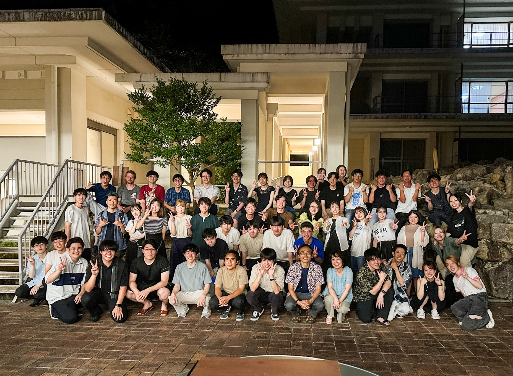
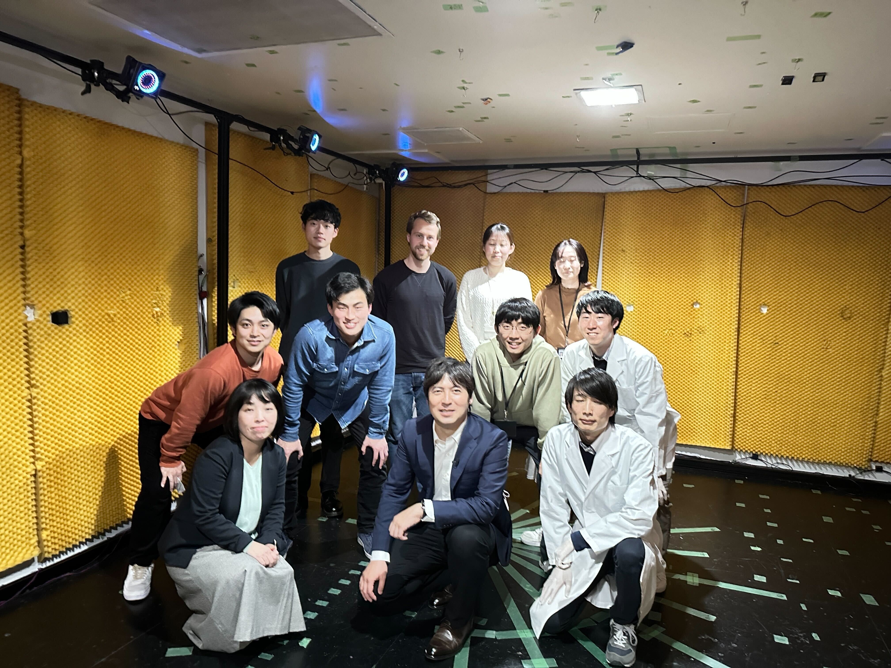
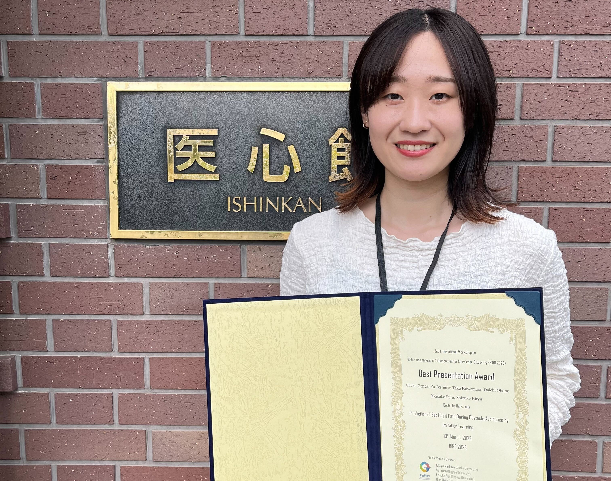
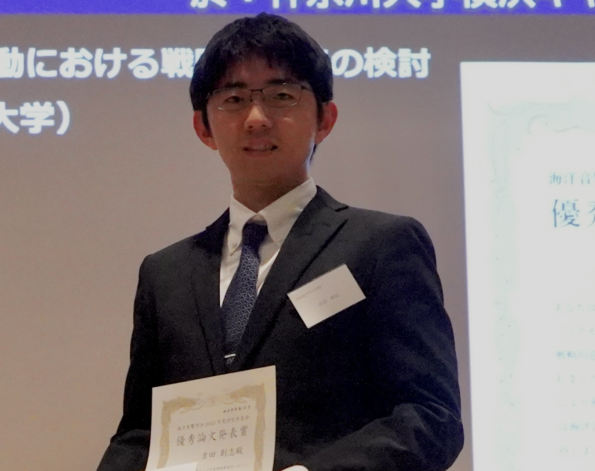
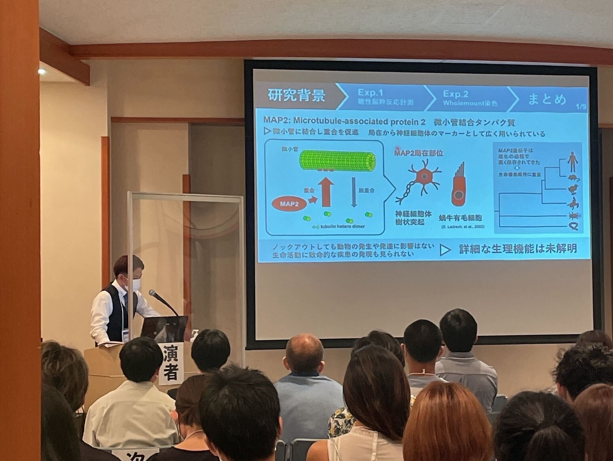
 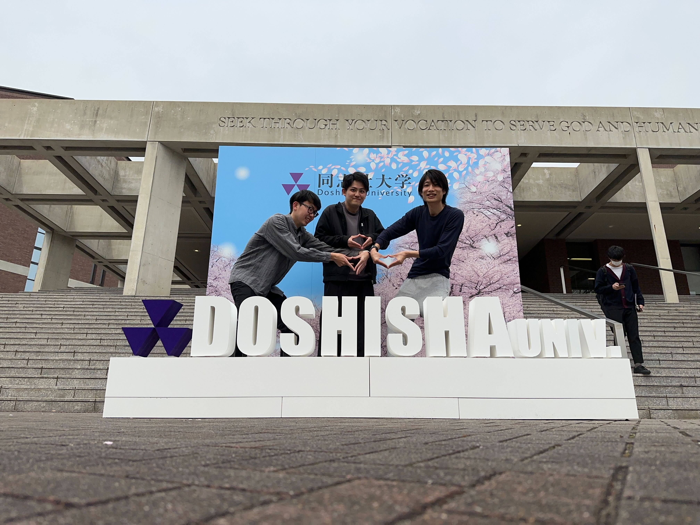
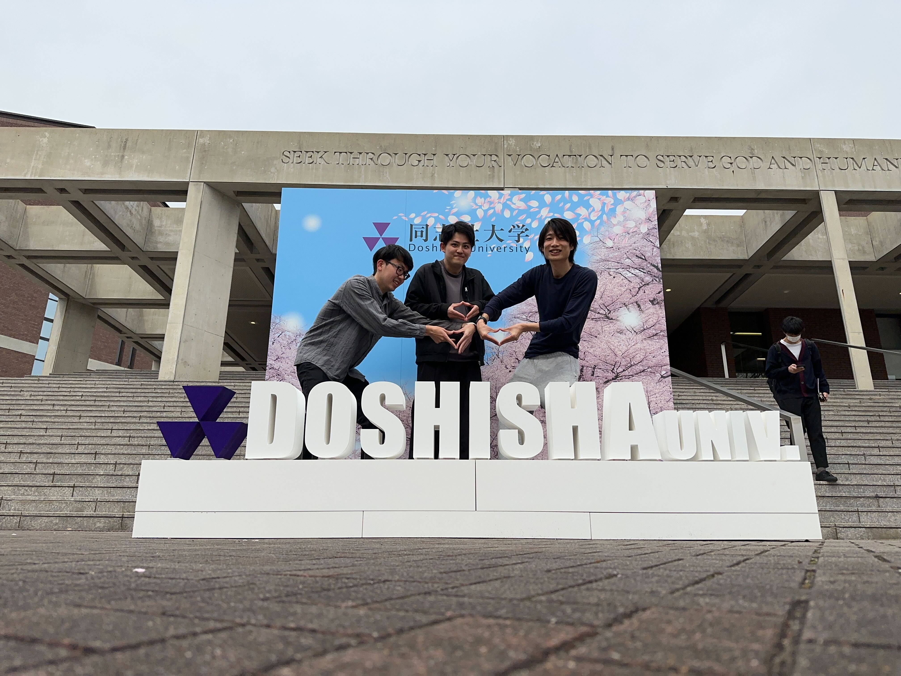
-IMG_55180.JPEG) 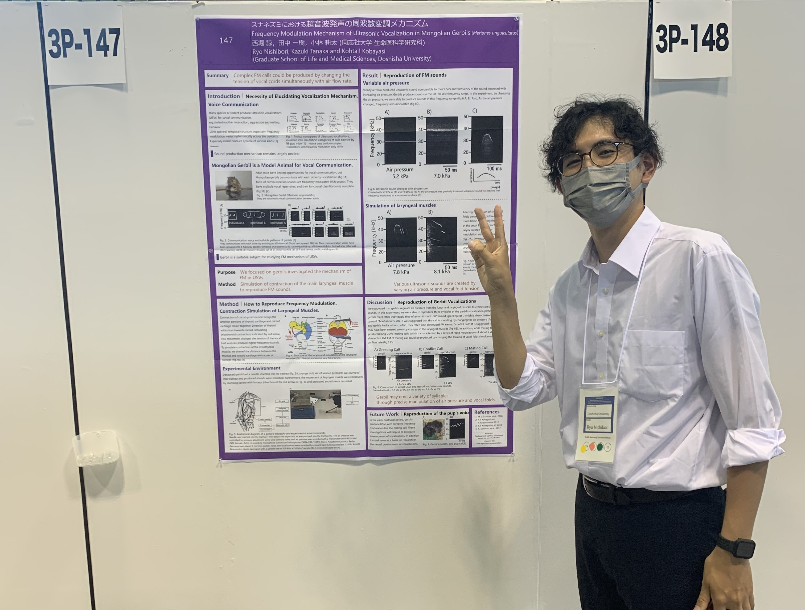
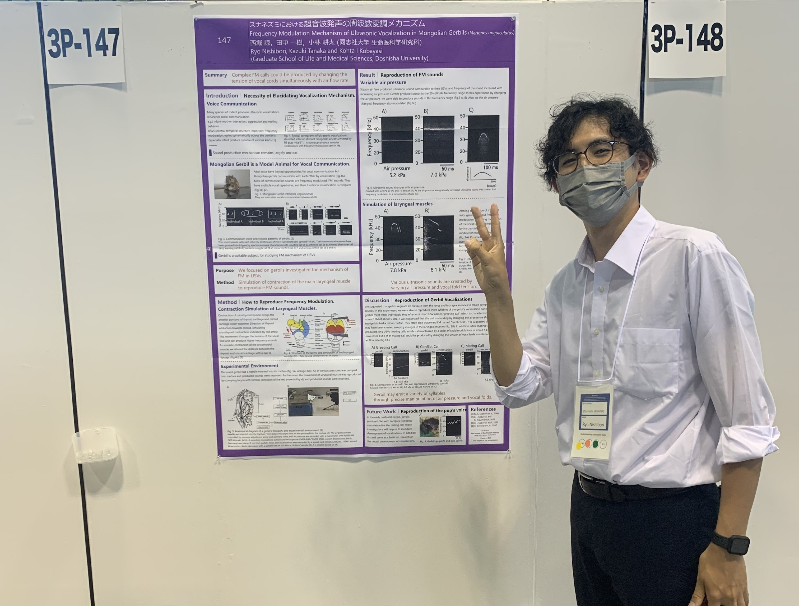
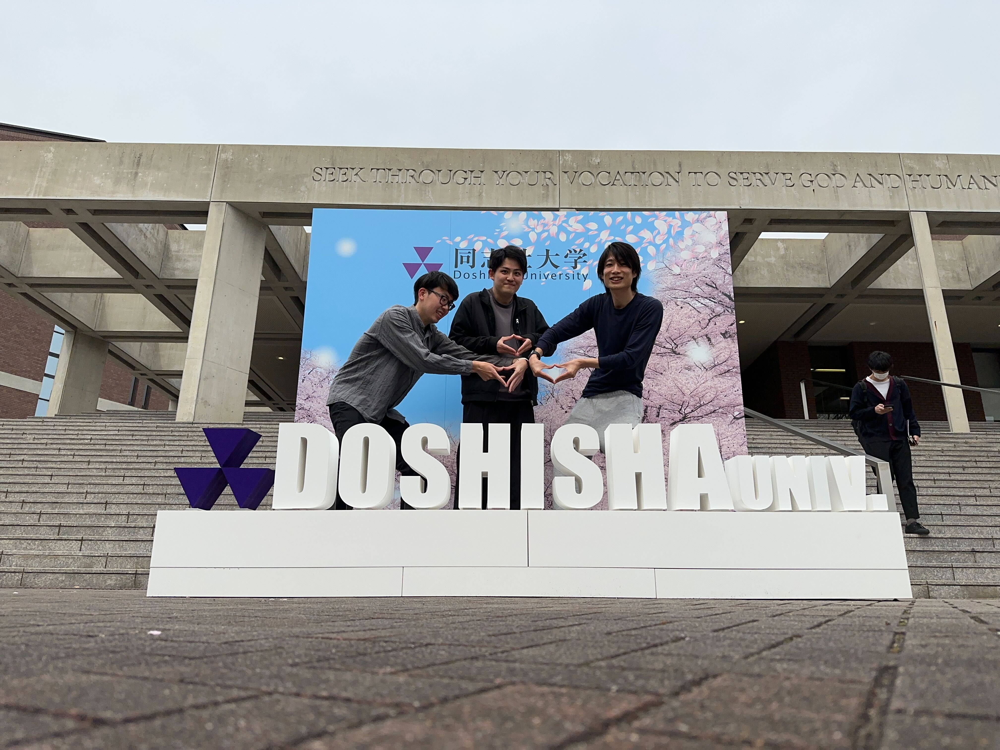
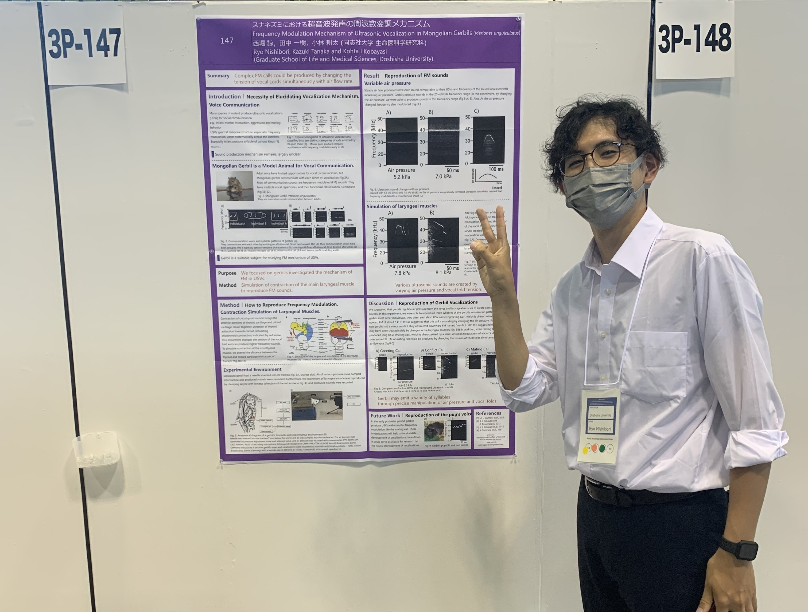
Staff
Professor
Shizuko HIRYU
Professor
Kohta I. KOBAYASI
Specially appointed associate professor
Emyo FUJIOKA (Doshisha University, Organization for Research Initiatives and Development)
Secretary
Yukiko TARUMI
Experiment supporter
Eiichi KOTANI
Student
Doctoral course
Kazuki YOSHINO-HASHIZAWA （D3, Neuroethology Collaboration (Bat) group, DC2）
Hidekazu NAGAMURA （D2, Human/Rodent group, SPRING）
Kazuki TANAKA-SHIN'YA（D2, Human/Rodent group, DC2）
Soshi YOSHIDA（D1, Bat group, SPRING）
Shoko FUJITANI （D1, Bat group, SPRING）
Ryo NISHIBORI （D1, Human/Rodent group, DC1）
Master's course
Kiho Huji Shoko Genda
Kanta Hasegawa
Keito Hosokawa Daiki Hosono
Masaya Kawano
Miyu Kodama Tasuku Miyazaki
Akito Nomi
Ryota sugimori Taichiro Tanaka Seiya Oka
Andreas MAYER (M2)
Emi Fukuzawa Tamao Hirao Yudai Imai
Yuta Kuroki Harutaka Nakagawa Yuna Nishiuchi
Daichi Ohara Yuka sato Noriyoshi Seno
Seita Tomioka Kazuki Yamazaki Megumi Kato Casey Tess Spiteri (M1)
Undergraduate course
Misaki Takaoka Manami Hirata Yume Kinoshita
Numata Shintaro Ryota Munekata Mai Ogata
Ayase Kawasaki Kaito Fukada Yo Kanda
Manato Taniguchi Haruki Ishikawa Ellie Miura
Yuta Aoki Shizuki Nara Takayasu Fukawa
Haruhito Matsumoto Ren Takata Yui Onishi
Ryosei Ishizaka (B4)
Research student
Hayato Fujimura
※Students indicate the academic year for the spring semester of 2023.
Collaborative researcher
Yasufumi YAMADA (Hiroshima University, Associate professor)
Kazuma HASE (Toyama University, Associate professor)
Takafumi FURUYAMA (Kanazawa Medical University, Associate professor)
Yuta TAMAI (University of Tübingen, JSPS Overseas Research Fellowships)
Yuma OSAKO (Massachusetts Institute of Technology, JSPS Overseas Research Fellowships)
Shota A. MURAI (Tokyo University, Specially Appointed Researcher)
Yu TESHIMA (JAMSTEC, Specially Appointed Researcher)
Yuki ITO (Doshisha University Grad. sch. Brain Science, Associate professor)
Click here to see past members FY 2022 FY 2021 FY 2020 FY 2019 FY 2018 FY 2017